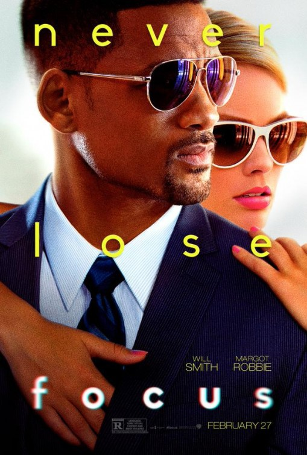
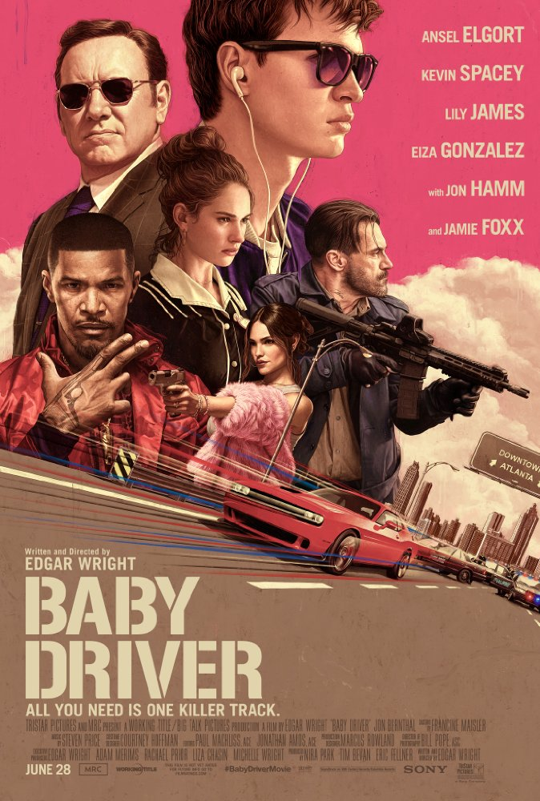

Movies
FOCUS
Genre: Comedy | Crime | Drama | Romance
Release date: 26 February 2015
Stars: WIll Smith , Margot Robbie, Adrian Martinez, Rodrigo Santoro
- Description:
"Focus" blends two different movies in roughly equal measure. One is a movie about con men, scam artists and hustlers, in the tradition of "The Sting," "Ocean's Eleven," "House of Games" and "Shade." The second movie is a romantic comedy between two people who are strongly attracted to one another, but who cannot and do not trust each other.
The movie about con men is brilliant. The hustles and scams are clever and cleverly executed with excellent skill and tradecraft. Dramatically, the double-blinds and double- crosses are well executed. The players con their marks, one another and the audience with finesse and aplomb. The cinematography, choreography and editing are crisp. The reveals are plausible within the film's cosmos of reality.
The romantic comedy is not bad. One can understand and believe the attraction between the two characters. Will Smith's character is hunky, clever, confident, successful and wealthy. Margot Robbie's character is gorgeous,vulnerable, clever and charming. But the major plot points in this boy finds girl, boy loses girl, boy wins girl back subplot seem contrived, while the intriguing aspect of their relationship (How can two con artists with a history of deceiving one another learn to trust one another?) isn't explored in a satisfactory manner. Instead we get a breakup for reasons that are never explained, a repeated gag involving a wallet, and a massive coincidence that leads the audience to believe one of them has a hidden agenda involving the other. The relationship between them works best when they are conning one another, but it needs resolution.
Technically, the film is beautifully done. Cinematography, locations, wardrobe, make-up, editing, audio -- everything is polished. It's a movie that merits a second or third viewing, not only to see the cons played out, but also to appreciate some of the subtle foreshadowing.

FAST AND FURIOUS
Genre: Action | Crime | Thriller
Release date: 18 October 2001
Stars: Vin Diesel, Paul Walker, Michelle Rodriguez
- Description:
This movie, has by far the best car racing scenes ever filmed, as well as the best cars. They are gorgeous machines, and these guys certainly can drive them. Great story, not just another Gone in Sixty Seconds where all they did was steal cars, there actually weren't very many race scenes as you might expect, but every shot is filled with cars, and lots of them. The acting is great as well, as usual Vin Diesel gives a brilliant performance, as Dominic Toretto. It has already earned a massive following, and when you leave the theaters you will be filed with such a massive adrenaline rush, that you and all your buddies will be left with the feeling that you must go out and race. Everybody I have talked to have said the same thing, it just has this crazy adrenaline rush it gives you. I highly recommend this to all fans of cars, and racing, but it has something for everybody so see it even if you are not a fan of either, bottom line, just see it

EDGE OF TOMORROW
Genre: Action | Adventure | Sci-Fi
Release date: 5 Juni 2014
Stars: Tom Cruise, Emily Blunt, Bill Paxton
- Description:
Edge of Tomorrow is described by the director himself as "Groundhog Day meets Starship Troopers". The former mentioned is actually quite important since the trailers made this film look pretty dark, which is not the case. This is fun action film with lots of humor. Humor that perfectly fits this film. The time-loop allows the Cruise's Colonel Cage to remember exactly the situation he repeats over and over, which is many times very funny. At films with time-loop I am alway worried that the film might get repetitive. Well you don't have to when Doug Liman is at helm. The film has no time to get repetitive when it is moving at such fast pace. An action scene follows an actions and the scope is just mind blowing. This film packs in so much in just two hours. Other films usually keep the best scenes for the big finale. In Edge of Tomorrow all the action scenes are the best scenes of the film.
BABY DRIVER
Genre: Action | Crime | Music | Thriller
Release date: 24 August 2017
Stars: Ansel Elgort, Jon Bernthal, Jon Hamm
- Description:
Everything about the film is pretty much pitch perfect if you ask me. Lets start with the cars. I have not been a fan of Fast and Furious films, but the chase scenes in this film run circles around that series if a certain reality of the moves matters to you. This is more in line with Bullit,French Connection, and the Italian Job films as far as great chases.
The music, fun, simply fun. Songs from every decade of my lifetime.
Action best pure adrenaline action in years. You will be truly on the edge of your seat during much of the film.
Humor, what can I say, love Edgar Wright's humor and this is his best.

Home